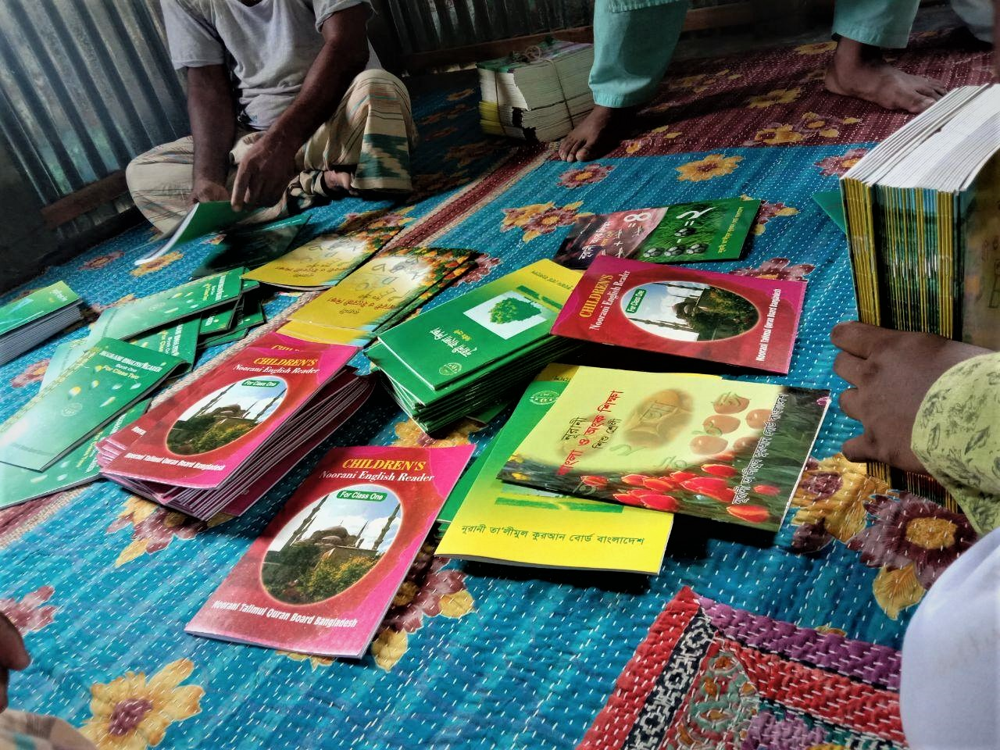
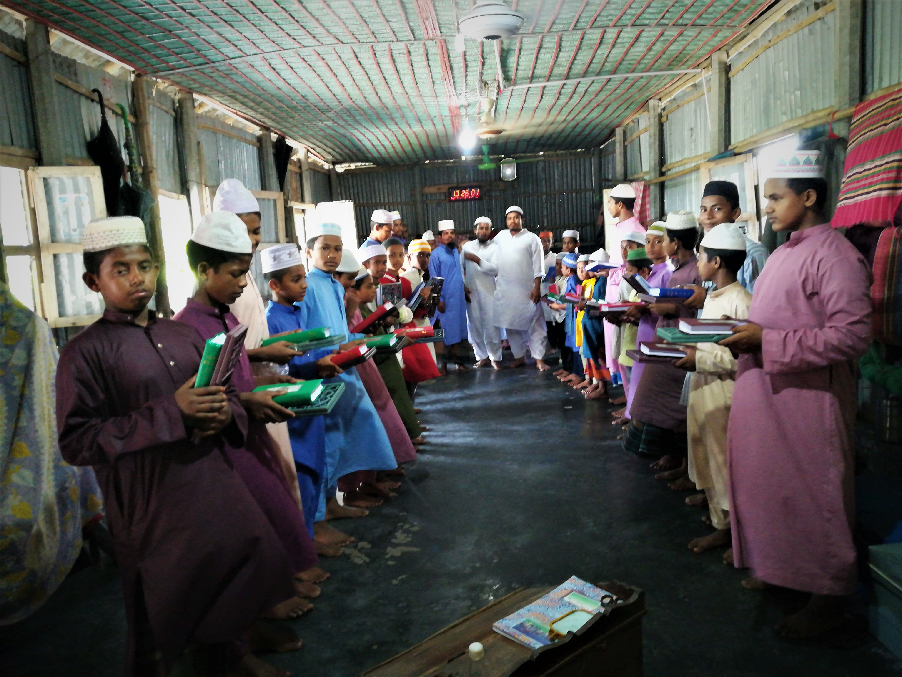
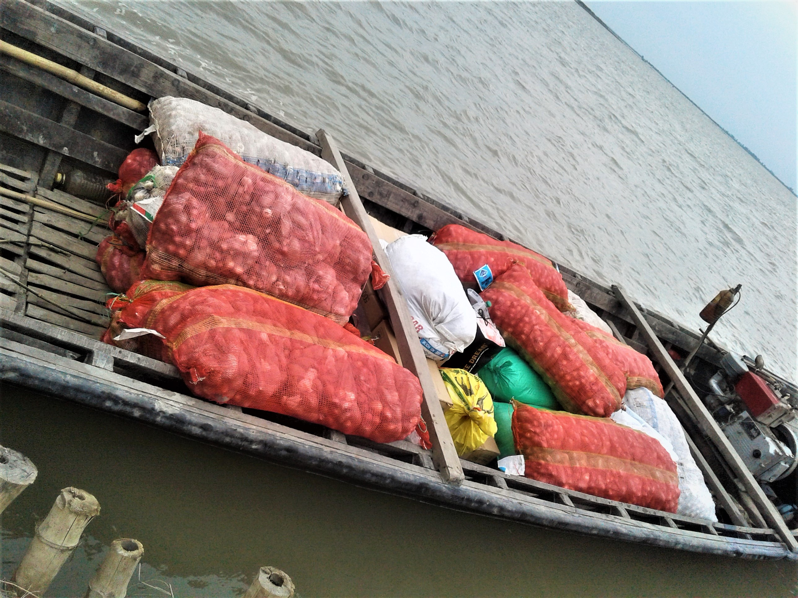
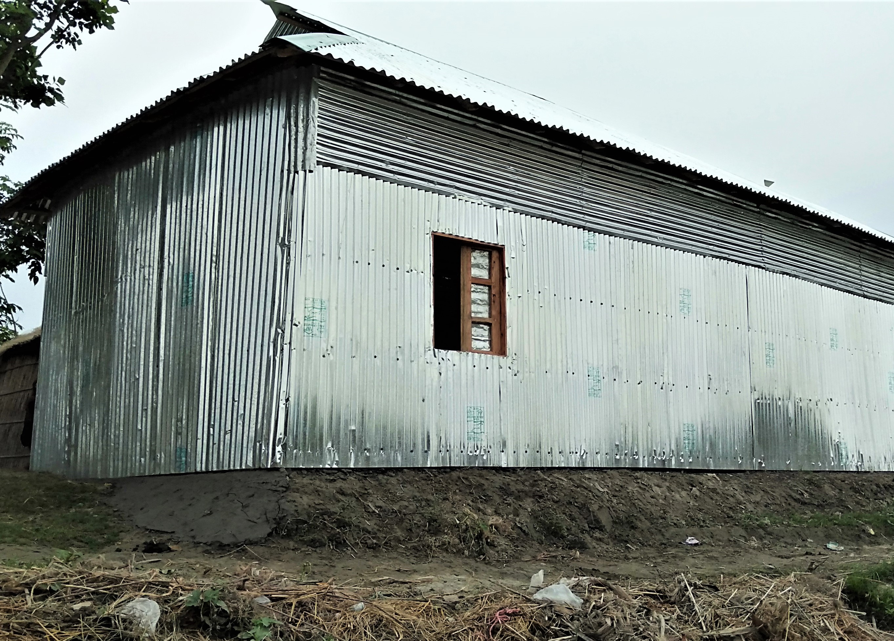

মাদ্রাসার বিতাব বিতরণ
কুরআন বিতরণ
কুরবানীর গোশত বিতরণ
মোক্তব নির্মাণ প্রজেক্ট
উত্তরবঙ্গের প্রত্যন্ত অঞ্চল গুলোতে কাদিয়ানী ও খ্রিষ্টান মিশনারি ফিতার প্রকোপ অনেক বেশী। এই ফিতনাকে প্রতিহত করার উদ্দেশ্যে গাইবান্ধা জেলার চরাঞ্চল গুলোতে আমরা প্রাথমিক অবস্থায় মোক্তব নির্মাণ প্রজেক্ট হাতে নিয়েছি। আমাদের নিয়্যাত, এর মাধ্যমে উক্ত বন্যা-কবলিত এলাকা গুলোর মুসলিমদের মাঝে কুর'আন ও সুন্নাহর আলো পৌছিয়ে দিতে পারব। আল্লাহ-ই তৌফিক দাতা।
রাসুলুল্লাহ (সাল্লাল্লাহু আলাইহি ওয়া সাল্লাম) বলেন, আল্লাহ তার উপরে দয়া করেন না, যে জমিনের অধিবাসীদের উপরে দয়া করেন না। - এই হাদিসকে সামনে রেখেই আমরা চেয়েছি বন্যা-শীতের মত কঠিন সময়গুলোতে আমাদের মুসলিম ভাই-বোনের পাশে দাড়ানোর। চেষ্টা করেছি, তাদের কাছে ত্রাণ ও শীত-বস্ত্র পৌছিয়ে দিতে। আল্লাহ আমাদের কাজ গুলোকে কবুল করে নিক, আমীন।